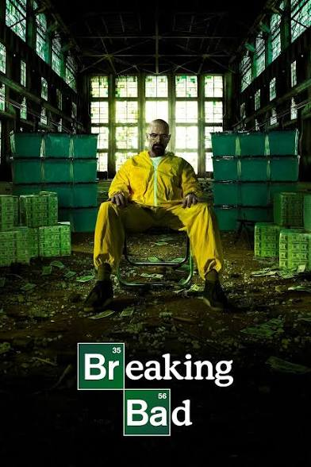
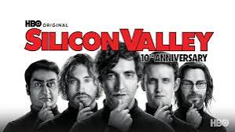
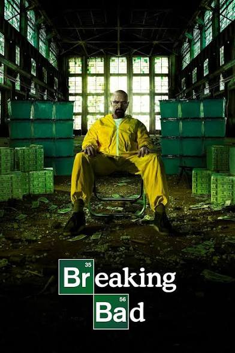
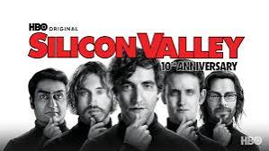
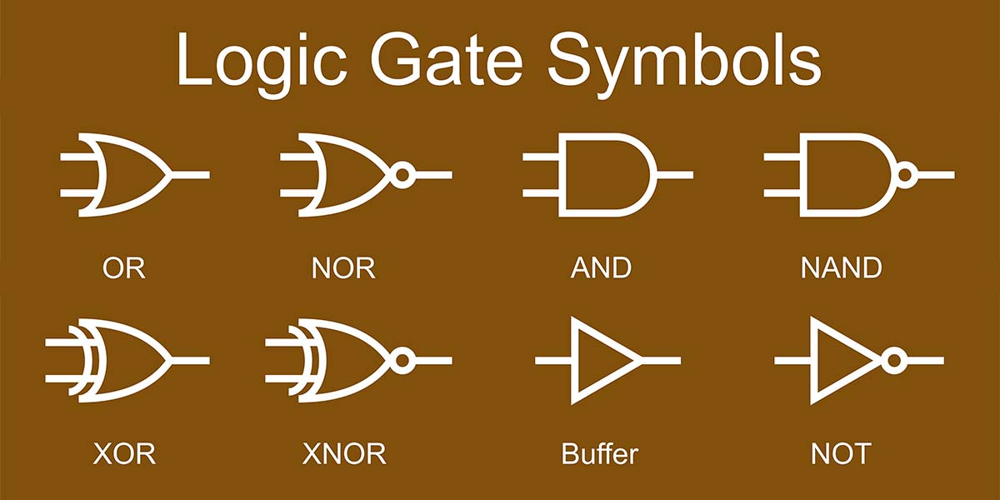

About Me | My Resume | My Interests | Lessons Learned in CS100
My name is Nathan Neuman. I am 18 years old and currently pursuing an undergraduate BS in Economics at George Mason University. In my free time, I like to cook and go hiking outside. I watch a lot of TV shows, my favorites right now are Breaking Bad and Silicon Valley. I also like movies and playing video games. My current favorite games are Red Dead Redemption 2 and Fortnite. Balancing academics with these interests keeps me engaged, curious, and always learning.
You can view my resume here: Resume PDF
Here are some of my current interests:
 



Links to some websites I like:
In my CS100 class, I learned many important computing concepts. I now understand how computers work at a basic level with binary numbers and logic gates. I also learned about networking, including how the internet functions with IP addresses and protocols.
The course taught me about computer security and privacy, which has made me more careful online. I found the sections on algorithms and search engines particularly interesting. I hope to continue learning more about how computing applies to economics and data analysis.
